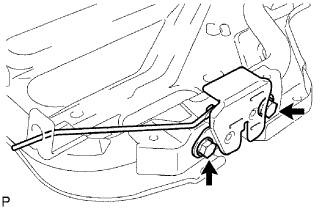
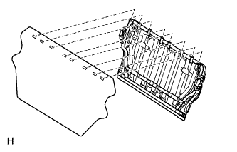
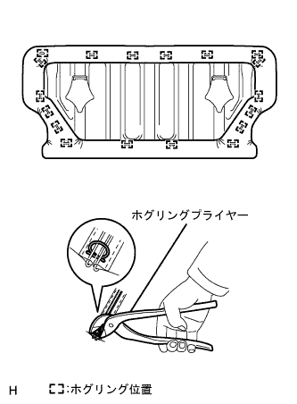
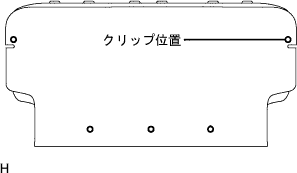
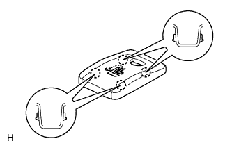
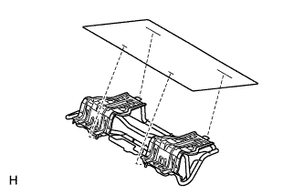
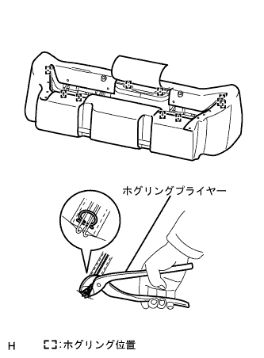

Assembling the rear seat ASSY (4WD) |
| 1. List of back lock Assy RH installation |
|  |
With two bolts, attach the rear seat back rock ASSY RH.
| 2. List of back lock Assy LH installation |
With two bolts, attach the rear seat back rock ASSY LH.
| 3. List seat Batsuku Andchlow installed |
|  |
Attach the rear seat back and crose to the rear seat backframe ASSY.
| 4. List of rear seat backpad SUB-ASSY (cover Tsuki) Installation |
|  |
Use a hogling plier to attach a rear seat back cover and pad by hogling.
|  |
Attach the rear seat back cover with 5 new clips.
| 5. Installation of the rear seat back cover |
|  |
Make the claws and attach two rear seat backcas.
| 6. Lear seat back stop button glort installation |
Attach 2 rear seat back stop buttung romets.
| 7. List of headrest support installation |
Attach 6 rear seat headrest support.
| 8. List of rear seat back stop release button installation |
Turn the rear seat back stop release button by hand in the clock direction and attach two rear seat back stop release buttons.
| 9. List of headrest ASSY CTR installation |
Attach the rear seat back Assembly CTR to the rear seat back Assembly.
| 10. List of headrest assessed |
Attach 2 rear seat headrest ASSY to the rear seat back Assembly.
| 11. List of rear seat cushion Ander cross installation |
|  |
Attach the rear seat cushion Anda cross to the rear seat cushion frame ASSY.
| 12. List of cushion cover & pad installation |
|  |
Use a hogling plier to attach a rear seat cushion cover and pad by hogling.